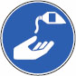
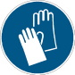

Hautschutz |
| Beispiel für einen Hautschutzplan | |||
| Wer oder welche Tätigkeit |
Schutzhandschuhe | Hautschutzmittel Produkt A oder Produkt B |
Hautreinigungsmittel Produkt C |
| Lagerarbeiter | Schutzhandschuhe gegen mechanische Risiken | Nur wenn Handschuhe nicht getragen werden dürfen, Produkt A auf saubere, trockene Haut auftragen | Zum Arbeitsende, bei Pausenbeginn und bei Verschmutzung |
| Alle im Außenbereich (Outdoor) Tätigen |
Schutzhandschuhe gegen mechanische Risiken | Produkt B, Sonnenschutzmittel, mindestens Schutzfaktor 30, auf saubere und trockene Haut auftragen, alle 2 Stunden wiederholen | Zum Arbeitsende, bei Pausenbeginn und bei Verschmutzung |
| beim Umfüllen von Gefahrstoffen |
Chemikalienschutzhandschuhe | Zum Arbeitsende, bei Pausenbeginn und bei Verschmutzung | |
| bei Reinigungs- arbeiten |
Chemikalienschutzhandschuhe mit Unterziehhandschuhen aus Baumwolle | Zum Arbeitsende, bei Pausenbeginn und bei Verschmutzung | |
| Hautpflegemittel in längeren Pausen oder arbeitsfreier Zeit verwenden. | |||
Rangfolge der Maßnahmen
Hautschutz vor der Arbeit
Hautreinigung
Hautpflege
UV-Schutz


07/2021